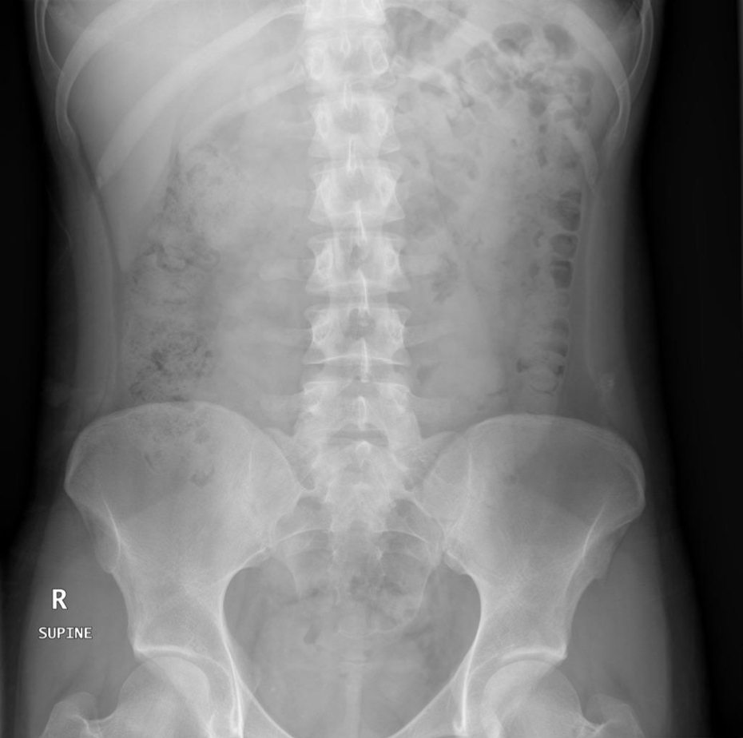
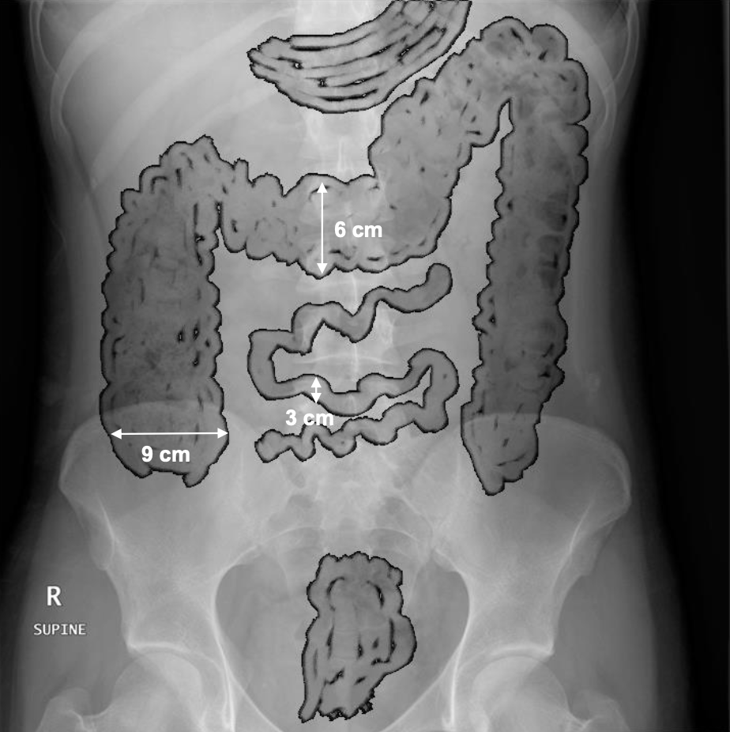
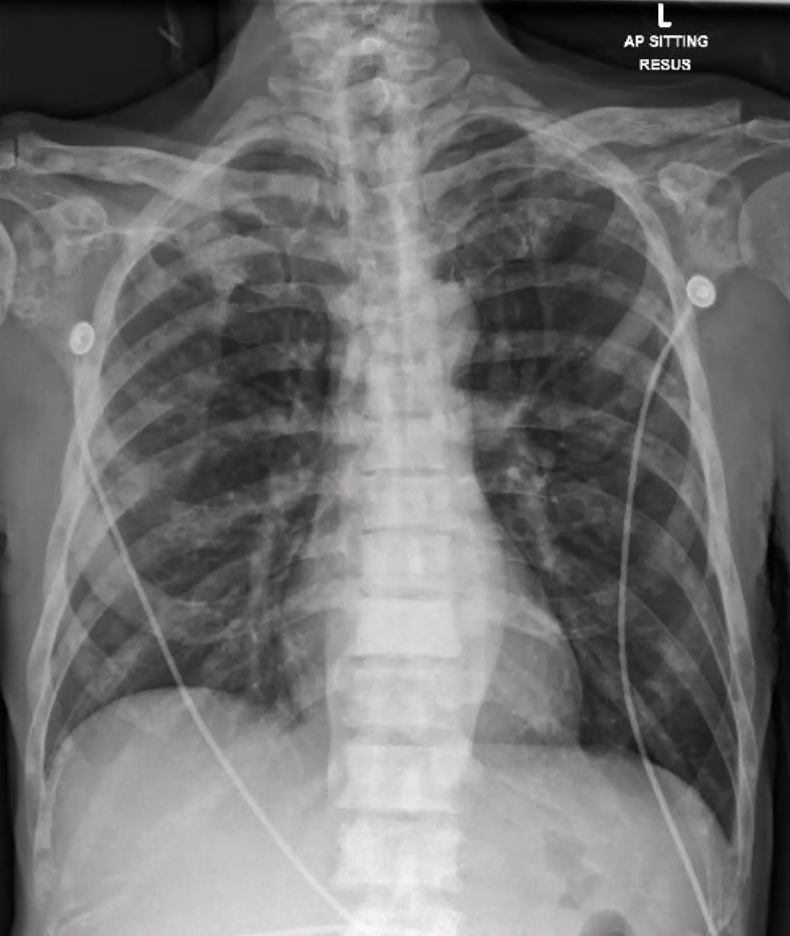
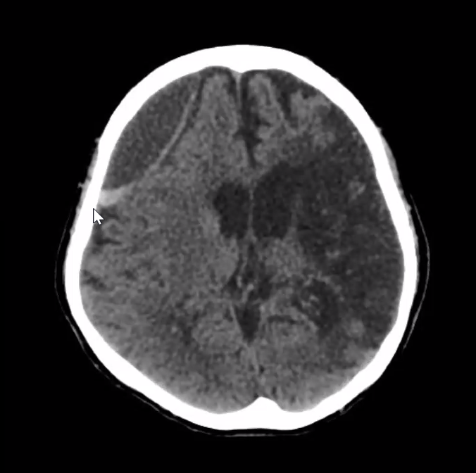

Investigations¶
- ECMO efficacy is dependent on workflow of centres more than the technology and other things
- Survival radiology
- Started by lai lok chen
- Kee Tze Phei - neuroradiology and neurointerventionist
Bloom's Taxonomy of Learning Domains

Monitoring¶
Vitals¶
Non-invasive Blood Pressure¶
Postural Blood Pressure¶
Body Temperature¶
Oxygen Saturation¶
Blood Pressure¶
Oximetry¶
Capnography¶
Thermometers¶
Bedside¶
Hypocount¶
VBG¶
Urine dipstick¶
Urinary Pregnancy Test¶
Bedside U/S¶
Labs¶
For each lab, consider:
- How to prepare patients before sample collection
- When, how, where and how much material to collect
- Types of containers used e.g. sterile, plain, with preservative, anticoagulant or transport media
- Conditions of storage and transportation of samples to the laboratories
Bloods¶
Sample collection¶
- Verify to ensure that the sample is collected from the correct patient by checking for at least two identifiers, asking for the patient’s name, and NRIC number/Passport number, or address or date of birth, or by checking the patient’s wristband for name and NRIC number/Passport number.
- An adequate amount of the sample must be collected to enable the test to be carried out. If multiple tests are ordered, make sure that sufficient sample is collected. If the sample is insufficient, the authorised requestor should state which tests should be done in order of priority.
- Aseptic techniques must be employed during collection to prevent the introduction of micro-organisms into the patient’s anatomical space, and to prevent the sample from being contaminated during the process of collection.
- All samples should be regarded as potentially infectious and standard precautions guidelines should be followed by all healthcare workers during sample collection and handling. Samples must be collected into appropriate containers before despatch to the laboratory. Be careful to check for cracks in the containers and to ensure that the lids of containers are properly tightened to prevent leakage of samples during handling and transportation. This can pose infection hazards to transport and laboratory staff.
- Ensure that the outer surfaces of the containers are not contaminated by the patients’ samples.
Vacutainers in SGH¶
| Description | Order of Draw | Tube Content | Draw Volume | Use | Instructions |
|---|---|---|---|---|---|
| BACTEC Blood Cultures | 1 |  |
8 – 10 mL per bottle | Aerobic & Anaerobic Cultures | Blood cultures should be done separately. However, if blood samples need to be taken, then blood cultures are done first to avoid contamination by the other blood tubes. |
 Blue Blue |
2 | Sodium Citrate | 2.7 mL | PT/PTT PT/INR Platelets Function Test (PFT) (use 7 tubes for PFT) | Allow tube to fill completely. Tube inversion x 4 |
 Red Red |
3 | Plain | 6 mL | Antibody identifications (Immunohaematology) | Tube inversion x 5 |
 Gold Gold |
4 | SST (Plain with Gel) | 5 mL | For Biochemistry tests (serum determinations) | Tube inversion x 5 |
 Green Green |
5 | Lithium Heparin | 4 mL | Ammonia (send in with ice-pack), HLAB27 (use 2 tubes), Cytogenetic investigations | Tube inversion x 8 |
 Pink Pink |
6 | K2EDTA 10.8 mg | 6 mL | Strictly for Group X-Match; Pre-transfusion Tests (Blood Group, Antibody Screen, Compatibility test) | Tube inversion x 8 |
 Lavender Lavender |
7 | K2EDTA 5.4 mg | 3 mL | FK506, Cyclosporin, G6PD, FBC, HbA1c, Homocysteine (send in with ice-pack) | Tube inversion x 8 |
 Grey Grey |
8 | Sodium Fluoride | 6 mL | Lactate (send in with ice-pack), Pyruvate, GTT | Tube inversion x 8 |
- Pink and Red for blood bank
- O negative - give to female, caucasian, and Indians; other patients give O positive
FBC¶
APTT/PT¶
GXM¶
Renal Panel¶
Urea / creatinine ratio
Liver Panel¶
- alanine transaminase (ALT)
- aspartate aminotransferase (AST)
- alkaline phosphatase (ALP)
- albumin
- bilirubin

- Iron metabolism
- Glucose metabolism (glycogenesis, glycogenolysis, gluconeogenesis)
- Synthesizing proteins (cholesterol, albumin, clotting factors)
- Synth


Procalcitonin¶
CRP¶
Urine¶
Toxicology¶
Microscopy¶
Peripheral Blood Smear¶
Imaging¶
Resources
- Survival Radiology: Lee Shu Yi Sonia - Changyi
- Tan Jin Rong - chief resident, interest in MSK
- Speaker is Mark Wang - final year resident at SGH
- Zehan Tan is in radiology
General Notes
- Ring enhancement refers to a bright intensity that can be observed surrounding many lesions on both CT and MRI when contrast is administered. It usually indicates local edema around a mass lesion, and in the brain can indicate the breakdown of blood-brain barrier.
- CT vs MRI
- CT is faster and less expensive, greater sensitivity for acute head trauma, better for detection of cord compression and calcifications
- MRI is better for visualization of soft tissue and tissue edema, including brain and spinal cord (higher sensitivity for strokes, mass lesions, etc.). Allows for multiplanar imaging (Axial, coronal, sagittal, and oblique), no ionizing radiation.
Body Imaging, Abdomen¶
Abdominal X-Rays¶
Possible Positions
- Standard Abdo AP is a supine position
- Erect position Abdo X-Ray
- To look for free intraperitoneal air
- Lateral decubitus
- For patients in whom erect position is not possible
Approach = Air, Bone, Calcifications, Soft Tissues, and Review Area
X-ray densities
| black | dark-grey | light-grey | nearly white | white |
|---|---|---|---|---|
| gas | fat | Soft tissue / Fluid | Bone calcification | Metal |

-
Bowel gas pattern
-
Within normal gas-containing organ? (e.g. bowel, lungs)
- Within organ which is not normally gas-containing?
- Within intraperitoneal / retroperitoneal space? (i.e. perforated viscus)
- Remember that air rises
- 3 - 6 - 9 rule
| Characteristics | Stomach | Small bowels | Large bowel |
|---|---|---|---|
| Location | Epigastrium or left upper quadrant | Central | Peripheral (tends to frame small bowel) |
| Contents | Variable | Fluid and air | Faeces (mottled densities), fluid, air |
| Mucosal / wall pattern | Rugal folds: mucosa and submucosa forming thick ridges | Valvular conniventes - mucosal folds cross full width; closely spaced in jejunum and widely spaced in ileum | Haustra - sacculations formed in spaces between taeniae coli; do not cross entire width |
| Size / diameter | Variable | 3 cm | 6 cm (caecum 9 cm) |

-
5 Locations of extra-luminal air
-
Intra-mural gas = gas in the bowel wall
- This is a sign of bowel ischemia
- Other causes include meds, iatrogenic, pulmonary disease e.g. COPD
- If present, also look for portal venous gas
- Intra-peritoneal gas = gas in peritoneal cavity
- This is a sign of perforated hollow viscus and a surgical emergency
- Look for air under the diagram in erect films
- Look for Rigler's sign: presence of air along the luminal and peritoneal aspects of bowel wall
- Other signs of penumoperitoneum
- Cupola/saddlebag/mustache sign — Air accumulation underneath the diaphragm central tendon in midline.
- Lucent liver sign — Reduction of liver opacity due to air anterior to the liver.
- Football sign — Massive pneumoperitoneum outlining abdominal cavity
- Falciform ligament sign — Air outlines the falciform ligament
- Inverted V sign — Air outlining lateral umbilical ligaments (inferior epigastric vessels)
- Doge's cap sign — Triangular collection of gas in Morison pouch
- Telltale triangle sign — Triangular air pocket between three loops of bowel.
- Urachus sign — Air outlining middle umbilical ligament
- Hepatic edge sign — Air outlining hepatic edges
- Retro-peritoneal gas
- This is a sign of perforated retroperitoneal hollow organ (viscus) or infection that produce gas
- It shows up as air around retroperitoneal organs
- Rectum, ascending and descending colons, duodenum (D2 to D4)
- Psoas muscle
- kidneys, adrenal glands, ureters
- Pancreas (except tail)
- Aorta and inferior vena cava
- Portal venous gas = Gas in portovenous system
- This is a sign of bowel ischemia;
- The gas is in a peripheral location within liver
-
Pneumobilia = Gas in biliary tree
- This is often seen after ERCp or Whipple's
- Centra location in the liver
-
5 groups of Intra-abdominal soft tissue
-
Liver
- Spleen
- Kidneys
- Psoas muscles
-
Urinary bladder
-
5 areas of Calcifications
-
Renal calculus
- These can occur at three places: pyeloureteric junction (PUJ), pelvic brim, vesicoureteric junction (VUJ)
-
Gallstones: RUQ, often laminated
-
Appendicolith: Right lower quadrant (RLQ)
-
Parenchymal
- Chronic pancreatitis: Multiple punctate Ca++
-
Tumors
- Dermoid cysts (tooth-like Ca++ and fat lucency)
-
Vascular
-
Phlebolith: Round, lucent centre; Often in pelvis; Can mimic urinary calculus
-
Beware aneurysm: Curvilinear, left paravertebral region
-
-
Review areas
-
Lung bases: e.g. consolidation, mass
- Other soft tissues e.g. herniated bowel in groin
- Bones
- Fractures
- Paget's disease
- Rugger Jersey spines
- Bamboo and dagger spines
- Osteosclerosis
- Destruction
- Fibrous dysplasia
Signs to note
| Signs | Diagnosis |
|---|---|
Staghorn calculi |
|
 |
Patient with stag horn calculi and fever, emphysematous pyelonephritis |
 |
hepatosplenomegaly |
 |
Small bowel obstruction |
 |
Portal venous gas, dilated bowel secondary to ileum, intramural gas, perforation = ischemia |
 |
Large bowel obstruction |
 |
Sigmoid volvulus coffee bean; Endoscopic decompression may be done in stable patient, and exploratory laparotomy. Common surgical emergency, elderly with chronic constipation and redundant sigmoid loops; closed-loop obstruction (competent ileocaecal valve may result in additional closed-loop) |
 |
Caecum volvulus; large bowels are collapsed in contrast to sigmoid volvulus |
  |
Perforation, pneumoperitoneum with air under the diaphragm, hyperlucent liver sign, Rigler's sign |
 |
Intussusception, invagination of bowel into lumen of more distal bowel; most commonly 6 months to 2 years (no lead point); look at the target sign |
- Majority radioopaque x-ray almost all visible on CT, smooth ovoid, linear or staghorm
- Size <=3 mm can pass through spontaneously most of the time.
- Start fluid resus, rep
- Emphesematous pyelonephritis
- Severe infection with gas accumulation in renal parenchyma
- Abdominal mass
- Paucity of gas in the area
- Displacement of adjacent bowel gas
- Origin of mass inferred by location
- Organ itself being diffusely enlarged
- Within the organ
- Outside the organ
Body Imaging, Chest¶

- 5 radiographics densities
- Air
- Fat
- Water / soft tissue
- Bone
- Metal
-

-
Same density processes or structures efface one another
- Position matters
- 2D representation of a 3D structure - think 3D

General principles for reviewing X-rays
- Correct patient, date and side (left/ right)
- Technical factors: aptient position, exposure, rotation etc
- Anatomy-specific systematic approach: differs for chest vs abdomen vs bones etc
- Compare with prior imaging
- Highlights subtle changes and abnormaltiies
- Clinical contact: guides diagnosis and differentials
CT myelogram
- When a patient cannot tolerate the long scan time of MRI,, or has a metallic implant that is not MRI compatible, CT myelogram can still be used
- One of the scenario, is when the patient has an implant that is not MRI compatible
- If there are contraindications to MRI (for example, if the patient has MRI-noncompatible pacemaker), and you need to evaluate the cord, CT myelogram is a reasonable alternative.
- usually MRI is enough to see the various structures. rarely in cases for nerve root injury (brachial plexus) we can better delineate anatomy. or if the patient has absolute contra-Ix to MRI
Sorry not sure if this was answered but - Considering that posterior stroke is quite poorly deteted on CT/MRI brain, how might we be able to better order directed imaging for patients with posterior circulation strokes? Is there any recommended interval between scans and any dangerous complications we need to be very much on the look out for?
- MRI brain is very useful for posterior circulation strokes
S1: Kee Tze Phei 03:58 PM
CT brain (non-contrast) remains the first line of investigation for patient presenting acutely with suspected posterior circulation stroke - to assess for intracranial haemorrhage and infarct You may be able to detect the mass effect associated with posterior circulation stroke on CT as well. If it appears normal on the initial CT, you can then proceed with MRI brain stroke protocol. CT is fast and readily available, and more sensitive than MRI in detecting intracranial haemorrhage, therefore it remains the first line of investigation in this group of patient, despite the reduced sensitivity in detecting posterior circulation infarct. MRI on the other hand may not be readily available in all institutions and not as good as CT in detecting intracranial haemorrhage.
S1: Kee Tze Phei 04:00 PM
Potential complications as we learnt from the two cases I presented - mass effect causing brainstem compression, obstructive hydrocephalus and intracranial herniation.
may I know what are the general principles/ indications for ordering a T1 vs T2
Cheng Tim-Ee Lionel 03:56 PM
S2: Tan Zehao 03:57 PM
There are usually standardized protocols for common examinations so you to do not need to specify unless it is for a uncommon indication
Tan Min-On 03:57 PM
You don't usually need to specify the sequences on a radiology order. Your clinical indication should be clear and radiology will protocol accordingly
Cheng Tim-Ee Lionel 03:57 PM
This is because modern day MRI sequences can be very complex and may vary from institution to institution.
What is the specific yield of doing a ADC in comparison to a DWI in MRI?
Tan Min-On 03:57 PM
They are part of the same sequence. Both come together
S1: Kee Tze Phei 04:03 PM
ADC (apparent diffusion coefficient) complements DWI in assessing infarct. In short, Acute infarct - restricted diffusion - bright on DWI, dark on ADC Subacute infarct - bright on DWI, slightly dark or isointense on ADC Chronic infarct - may or may not be bright on DWI, bright on T2W, bright or isointense on ADC
For a post contrast T1W scan, we usually suppress the fat so that the enhancement becomes more prominent.
hi! can i check how do we choose between contrast and non-contrast CT TAP besides looking at the eGFR?
Mindy Choong Chu Ming 04:05 PM
this would depend on the indication of the scan. what is the clinical question to be answered and whether contrast is necessary.
S2: Tan Zehao 04:05 PM
General principle is if you are looking for anything that is infective or tumours you should give contrast. Non-contrast to identify things that are already dense without contrast. like calculi and foreign bodies.
Cheng Tim-Ee Lionel 04:06 PM
When intending to give contrast, we must look for any potential contraindications: - renal impairment - contrast allergy - vascular access issues
Sometimes, even if there are contraindications, we may still want to give contrast if the benefits outweigh the risks. This usually has to be discussed with the patient.
When in doubt, discuss with your friendly radiologist! :)
Tan Min-On 04:06 PM
Contrasted scans for the chest, abdomen and pelvis by far have greater utility than non-contrast studies. A lot of pathology in the abdomen and pelvis for.e.g requires differentials in enhancement to diagnose e.g. a liver mass ?HCC vs mets vs cholangiocarcinoma. Non-contrast scans are also useful in lookin for gross abnormalities and calcified lesions but you can imagine differentiating one organ from another is very very difficult.
| Signs | Diagnosis |
|---|---|
| Lytic lesions in the ribs | Bone metastasis |
MSK Imaging¶

- Lines should be smooth
- Unfused apophysis can be seen in young patients
-

-
TLICS Thoraco-lumbar Injury Classification and Severity Score

| Sign | Condition |
|---|---|
 |
Communicated calcaneal fracture |
 |
Left pubic bone fracture and widened sacroiliac joint (diathesis) - the osseous and ligamentous components of the pelvis cause it to act like a ring, injury at a location should prompt searching for injury at another location |
 |
L2 burst fracture |
 |
L2 burst fracture with surrounding edema and caudal equina compression |
 |
T10 anterior translation, T11 fractured, |
 |
Vertebral fracture with epidural hematoma (Slightly bright on T1) resulting in cord compression |
 |
Ankylosing spondylosis patients are very prone to trauma induced fracture due to altered biomechanics |
   |
Mets, look for primary |
 |
Another case of mets |
   |
Disc space narrowing, X-ray with opacity with central lucency, cystic with small nodules around it called tree in bud, indicate small airway disease favouring inflammatory / infectious ethology, disruption of the vertebrae, necrotic psoas muscle; spondylodiscitis; drainage of psoas abscess; consider Staph aureus and TB |
 |
avascular necrosis Alcohol, SLE / sickle cell, exogenous steroids, pancreatitis, trauma, infection, Caisson disease |
  |
Fat fluid level, tibea plateau fracture with lipohaemarthrosis; very specific but not sensitive for intra-arthrotic fracture Osseofascial compartment pressure rising. Emergent fasciotomy is needed. Fractures involving arms and leg look for second injury, remember it is a ring |
 |
Supracondylar fracture Anterior and posterior fat pads, the latter is NOT normal. Elbow dislocation is a differential but NOT common. |
 |
boxer's fracture |
 |
|
  |
Sunburst, sclerotic, lifting of periosteneum: osteosarcoma |
 |
oscius mets to the lung |
 |
Soft tissue loss, air tracking: osteomyelitis; osteomyelitis is a clinical diagnosis; treat with ray amputation |
 |
Air in soft tissue; arranged MRI ned fas, treated with IV antibiotics; Often polymicrobial; Risk factor is immune suppression (esp diabetes); imaging is NOT required for diagnosis or treatment, treat emergency debridement is required. |
  |
Prosthetic loosening; aseptic osteolysis; parallel lucency greater than 2 mm at the bone-prosthetic interface, progressive linear lucency after 2 years postoperatively; change in position of arthroplastic |
 |
periprosthetic fracture |
 |
Besides fixing the fracture, need to review medication, including analgesics. Bisphosphonate related fracture - the other leg has abnormal thickening, focal lateral cortical thickening, in history there is minimal trauma; |
 |
Avulsion injury; frequent cause of hip pain in adolescents involved in sports. At this age the tendons are generally stronger than the apophyses. |
 |
Pathological fracture; worry malignant lesion, look at other bones |
  |
Young person, bilateral knee pain. There are bilateral stress fractures. |
 |
- Galeazzi fracture. Maisonneuvre fracture, Pilon fracture, Segound fracture etc
- Fatigue, insufficiency, stress fractures; often missed and even when no clinical history given.
Ultrasound¶
- Abdominal aneurysm, gallbladder disease, renal and adrenal masses, kidney stones, ectopic pregnancy, pregnancy
- 80/20 rule: on Utz, gallstones are diagnosed 80% of the time and kidney stones 20% of the time; on x-ray gallstones are diagnosed 20% of the time and kidney stones 80% of the time.
FAST¶
- Useful tools for quick detection of intraabdominal blood, pneumothorax, and hemothorax
- Once done DPL cannot be repeated, FAST can be done
- The extended FAST (eFAST) allows for the examination of both lungs by adding bilateral anterior thoracic sonography to the FAST exam. This allows for the detection of a pneumothorax with the absence of normal 'lung-sliding' and 'comet-tail' artifact.
- Focused Assessment with Sonography for Trauma (FAST) scan is a point-of-care ultrasound examination performed at the time of presentation of a trauma patient.
- patient in supine position
- 3.5-5.0 MHz convex transducer
- five regions may be scanned
- pericardial view: commonly referred to as the subcostal or subxiphoid view
- to examine the pericardium, the liver in the epigastric region is most commonly used as a sonographic window to the heart
- the potential space between the visceral and parietal pericardium is examined for a pericardial effusion
- if anatomical factors preclude epigastric probe placement, parasternal or apical four-chamber views may be used
- right flank view
- commonly referred to as the perihepatic view, Morison pouch view or right upper quadrant view
- four potential spaces are sequentially examined for the accumulation of free fluid: the hepatorenal interface (Morison Pouch) is first identified, with subsequent assessment of the more cephalad subphrenic and pleural spaces, visualization of the inferior pole of the kidney, which is a continuation of the right paracolic gutter, defines the caudad extent of an adequate view
- left flank view
- commonly referred to as the perisplenic or left upper quadrant view
- four potential spaces are sequentially examined in an analogous fashion to the right flank, albeit the splenorenal interface is assessed on the left
- pelvic view
- commonly referred to as the suprapubic view, this space is the most dependent peritoneal space in the supine trauma patient
- a transverse sweep, using the bladder as a sonographic window, the pouch of Douglas or rectovesical space is explored for free fluid
- An extended FAST or "eFAST" scan is now standard of care, and is performed by incorporating two views assessing the anterior thorax 7:
- anterior pleural views
- the anterior pleura is assessed for the presence or absence of sliding lung as a sensitive, but non-specific, indicator of a traumatic pneumothorax
- the probe is placed in a sagittal orientation in the midclavicular line between the clavicle and diaphragm
- anterior and lateral interrogation of interspaces 5-8 bilaterally is recommended
- Causes of false negatives
- obesity: severely limits assessment of the peritoneal cavity
- subcutaneous emphysema
- posterior acoustic enhancement caused by the fluid-filled bladder can result in free fluid being missed in the pelvic view
- Causes of false positives
- epicardial fat pads, the descending aorta, and pericardial cysts have been mistakenly identified as an effusion
- pre-existing ascites, pleural, and pericardial effusions due to medical conditions
- seminal vesicles mistaken for pelvic free fluid in the young male patient
2D echocardiogram¶
Provide information on
- Ejection fraction
- Diastolic function
- Pulmonary artery pressure
Doppler Ultrasonography¶
Doppler ultrasonography of the lower extremities may be performed to evaluate deep venous thrombosis. This patient's symptoms suggest lumbar stenosis and warrant a spinal MRI.
X-Rays¶
General principles for reviewing x-rays
- Correct patient, date, and side (left/right)
- Note technical factors - Patient position, exposure, rotation etc
- Anatomy-specific systematic approach
- Differs for chest vs abdomen vs bones etc
- Compare with prior imaging
-
Highlights subtle changes and abnormalities
-
Use clinical context to guides diagnosis & differentials
Observations
- More radioopaque object appears brighter than more radiolucent object on plain film
- On plain film, 'lucency' is a focal area of bone or tissue that has decreased density e.g. on x-ray, a lucent bone lesion may appear like a dark, punched-out hole in the surrounding normal bone. In contrast, sclerotic bone lesions appear denser than the surrounding bone and appear whiter.
Chest X-Rays¶
First check that the CXR is in good condition
- Identification - name, date
- Orientation - left vs right markers
- Rotation - clavicles and spinous process
- Position - supine, erect
- Penetration - thoracic spine should be visible
- Degree of inspiration (anterior 6th and posterior 10th rib visible)
Then at each part in turn:
- Heart and mediastinum
- Overall shape: mediastinal mass, cardiomegaly
- CTR = max transverse diameter / width of the thorax
- Traditional upper limit = 0.50
- Acceptable upper limit = 0.55
- Neonate upper limit = 0.60
- Unusual densities: calcification, foreign bodies (e.g. vascular lines, surgical clips etc)
- Unusual lucencies: Pneumomediastium, pneumopericardium etc.
- On CXR we can only see enlargement, NOT hypertrophy.
Case: Mitral stenosis, untreated, resulted in enlarged left atrium, pulmonary HTN

Case: pulmonary artery enlargement, oesophagus behind the left atrium, patient complains of dysphagia

Ball and valve

Case: Fluffy opacities
- Fluid -> exudate / transudate
- Contusion -> blood
- Lymph
- Inflammation -> pus

- Ribs spacing are increased.
- Massive pleural effusion

- Aneurysm of the LV and near the anterior wall
- 
- Kind of cardiac device
-

-
Lungs and pleura
- Abnormal white (densities): consolidation, nodules
- Abnormal black (licences): bulla, emphysema
- Airway alignment, vascularity, bronchial cuffling etc.
- Compare left and right lungs
- Upper third: careful to note changes behind clavicle and upper ribes
- Middle third: compare hila
- Lower third: lungs behind diaphragm, check behind heart
- Check pleura
- Thickening, effusions etc.
- Always ask yourself "is there pneumothorax"?
- External soft tissues: lymph nodes? subQ emphysema? other lesions
- Bones and soft tissue
- Ribs and spine: fractures, lytic/sclerotic lesions, defects
- Neck
- Upper abdomen
- Check for pneumoperitoneum!
- Always ask myself, is there free gas under the diaphragm?
- Diaphragm: flattened (COPD), blunted angles (effusions), or elevated (airspace consolidation)?
Caution: Blind spots easily missed in CXR
- Apices, hila
- Behind the heart, and below the diaphragms
- Bones, soft tissues, and neck
| Sign | Condition |
|---|---|
| Free air under the diaphragm |
- Scapular drawn out, patient is asked to hug something - good
- Patient is not rotated 0 the centre of clavicle is about equi-distance from the center
- Can make out the aortic
- Patient is taking in a deep breath - 9 / 10 posterior ribs; so that atelectasis is pathological if seen
- In CXR don't use lobes, say zones,

- Mediastinal outline - go for veins, artery, heart


Cases: 56M, 2 days of fever, cough and anosmia


Case: Nursing home resident, Fever 3 days
- Consolidation effacing right heart border
- Vascular marking is obscured
- Linear band on the lower left is called a linear atelectasis; which may indicate that a patient didn't take breath adequately to inflate the lungs when taking the CXR


Lobe collapses


Trauma
- Pneumothorax
- Hemothorax
- Lung contusion
- Flail chest

Injury patterns on CXR indicate underlying soft tissue injury;
Case: 
- Cannon ball appearance
- Small amount of gas - normal in the context of recently inserted chest drain
- Pneumothorax - both left and right
- Satisfaction of reach - have a systemic way to review the film
- Position dependent again

Aortic Dissection:
- widened mediastinum,
- Double wall sign

- Arrange CT angiogram


- Aortic dissection is not uncommon, Amy be rapidly fatal
- Have a high index of suspicion with the appropriate clinical symptoms
- CXRs are often normal, but sometimes the signs are there
- Beware of the displaced mural calcification
Epigastric Pain

- Peanut shape lucency
- Hiatal hernia

- Cardiomegaly with double density sign (left atrial enlargement)
- Upper lobe venous distension
- Kerley lines
- Bat winging
- Pleural effusions - may be caught in oblique fissure


AP CXR
Supine CXR
Lateral CXR - if outpatient and polyclinic and trying to know if the mass is anterior posterior o mediastinum. If not then move to CT.
HO has to report Xray; do not miss
0 gas, large things,
From Hui Fen UCL to All Panelists: 04:43 PM can I ask what would an thoracic aortic aneurysm look like? would it also appear as a widened mediastinum?
Moderator: Tan Jin Rong 04:45 PM
it may have a widened mediastinum (esp compared with prior xrays) with abnormal contour, possible mural calcifications along its course
Shanisse Tsai_YLL 04:45 PM
Hi Doctors :) i have a qn about kerley abc lines. Just a little bit confused if they are classified according to their length (a: 2-6cm; b:1cm ish; c: finer lines) or based on location (a: hilar, b: bases) etc?
S2: Tan Zehao 04:46 PM
Classified by location. And also usually only Kerley B lines are the ones more commonly described currently. A and C are more academic.
Tan Min-On 04:47 PM
These were based on old assessments of CXR. Kerley B refers to the peripheral most lines. Nowadays, the definition is useful but not really relevant. What these lines refer to is fluid along the interlobular septa due to pulmonary venous congestion.
Christabelle Tee Jie Ying 04:46 PM
Hello! May i clarify whats the difference between Kerley A / B / C lines? Thank you! (:
Tan Min-On 04:48 PM
S2: Tan Zehao 04:46 PM Classified by location. And also usually only Kerley B lines are the ones more commonly described currently. A and C are more academic. You 04:47 PM These were based on old assessments of CXR. Kerley B refers to the peripheral most lines. Nowadays, the definition is useful but not really relevant. What these lines refer to is fluid along the interlobular septa due to pulmonary venous congestion.
Cheng Tim-Ee Lionel 04:49 PM
There are many types of Kerley lines. In practical terms, most doctors only remember kerley B lines. They are all interstitial opacities (as opposed to air-space opacities/consolidation).
Andrew Seet_LKC 04:48 PM
May I clarify the significance / meaning of the term "ground-glass opacity"?
S2: Tan Zehao 04:49 PM
This term is usually used on CT rather than xray refering to increased densities in the airspaces (i.e. alveoli).
Tan Min-On 04:50 PM
Ground-glass is a description of an appearance either on CXR or CT. Ground-glass opacity (GGO) specifically is described in Fleishner criteria. Groudn-glass changes can be seen in many pathologies not limited to infection (e.g. COVID), pulmonary fibrosis or even tumour (adenocarcinoma of the lung)
Nicolle_Monash 04:48 PM
is there a chronological order to the pulmonary oedema cxr signs? e.g. is pleural effusion a later sign?
Tan Min-On 04:53 PM
There is probably an order to it but it is difficult to say exactly for e.g. when a pleural effusion occurs. Patient's present when they are decompensated usually when the physiological limits have been reached. Not uncommonly we do see the compensatory mechanisms e.g. upper lobe diversion before the consolidation
David Jianyuan Ho 04:50 PM
why was there air in all those locations in the last case?
Tan Min-On 04:51 PM
air can dissect along tissue planes. Along chest wall, abdominal wall, retroperitoneum, intraperitoneum. depends how much air
Benedict Flinders University 04:53 PM
For cases like boahearve syndrome, would you continue with CXR initially, or proceed to CTPA straightaway since the management of boarheave syndrome would need a CT ultimately.
Tan Min-On 04:54 PM
A CTPA is specific to looking for a Pulmonary Embolus. A CT Thorax would suffice. CXR is easy and fast to acquire and should be first line in managing your patients.
S2: Tan Zehao 04:54 PM
If there is pneumomedistinum, can move on CT. In fact, if the site of perforation is not seen we can do a contrast swallow under fluoroscopy
S2: Tan Zehao 04:54 PM
to see in real time where does the contrast leaks from.
CT_YLL 04:53 PM
Sorry would someone mind explaining again how a left upper lobe collapse differs again from other lobe collapses? Why is it dense superiorly and less dense inferiorly? Thank you!
Tan Min-On 04:55 PM
Left upper lobe collapses superor anteriorly due to it's anatomy. The left lower lobe compensatory hyperinflates. Gives you the veil sign- denser at the top, more lucent inferiorly due to hyperinflated left lower lobe
Cheng Tim-Ee Lionel 04:55 PM
This is because the collapsed LUL collapses anteriorly. And the collapsed LUL is thicker at its superior aspect compared to the inferior aspect (like an inverted triangle). So when you look from the front, it looks denser superiorly.
From Hui Fen UCL to All Panelists: 04:43 PM can I ask what would an thoracic aortic aneurysm look like? would it also appear as a widened mediastinum?
Moderator: Tan Jin Rong 04:45 PM
it may have a widened mediastinum (esp compared with prior xrays) with abnormal contour, possible mural calcifications along its course
Shanisse Tsai_YLL 04:45 PM
Hi Doctors :) i have a qn about kerley abc lines. Just a little bit confused if they are classified according to their length (a: 2-6cm; b:1cm ish; c: finer lines) or based on location (a: hilar, b: bases) etc?
S2: Tan Zehao 04:46 PM
Classified by location. And also usually only Kerley B lines are the ones more commonly described currently. A and C are more academic.
Tan Min-On 04:47 PM
These were based on old assessments of CXR. Kerley B refers to the peripheral most lines. Nowadays, the definition is useful but not really relevant. What these lines refer to is fluid along the interlobular septa due to pulmonary venous congestion.
Christabelle Tee Jie Ying 04:46 PM
Hello! May i clarify whats the difference between Kerley A / B / C lines? Thank you! (:
Tan Min-On 04:48 PM
S2: Tan Zehao 04:46 PM Classified by location. And also usually only Kerley B lines are the ones more commonly described currently. A and C are more academic. You 04:47 PM These were based on old assessments of CXR. Kerley B refers to the peripheral most lines. Nowadays, the definition is useful but not really relevant. What these lines refer to is fluid along the interlobular septa due to pulmonary venous congestion.
Cheng Tim-Ee Lionel 04:49 PM
There are many types of Kerley lines. In practical terms, most doctors only remember kerley B lines. They are all interstitial opacities (as opposed to air-space opacities/consolidation).
Andrew Seet_LKC 04:48 PM
May I clarify the significance / meaning of the term "ground-glass opacity"?
S2: Tan Zehao 04:49 PM
This term is usually used on CT rather than xray refering to increased densities in the airspaces (i.e. alveoli).
Would a type B aortic dissection also result in a widened mediastinum?
Tan Min-On 04:41 PM
definitely can. depending on size of dissection
Wang Qi Wei Mark 04:41 PM
Yes. Mediastinal contour made up of both the ascending and descending aorta - so dissection in either segment can cause widening.
I thought cardiomegaly cannot be dx from an AP film due to cardiac enlargement? How would you be able to tell from that film that the patients heart is enlarge?
Tan Min-On 04:42 PM
the heart size is not accurately assessed however if the heart is markedly enlarged then it would be a fair assessment. Some take >55-60% on an AP film as a potential guide
Moderator: Tan Jin Rong 04:42 PM
yes you are right we shouldn’t use AP films to evaluate heart size. but if its grossly enlarged (eg. >60%of thoracic diameter) then you can mention it. sometimes you see other signs, for example splaying of the carina for left atrial enlargement.
S2: Tan Zehao 04:42 PM
You are right as in this is what is usually taught in textbooks but in clinical practice typically applied to borderline cases (i.e. the cardiothoracic ratio is slightly more than 0.5). If it grossly enlarged we can actually conclude it on AP xrays.
Is there a right clavicle fracture in the chest drain xray or is that normal?
S2: Tan Zehao 04:37 PM
It is a calcified coracoclavicular ligament - normal variant
Tan Min-On 04:37 PM
no. the left clavicle looks similar. The patient has pseudoarticulations of the coraco-clavicular interface
So sorry in my previous question, I meant whether for counting ribs - do we attempt to count from the true first anatomical rib (which may not be easily seen on CXR) or the first most visible rib on CXR (which may correspond to the 2nd or 3rd anatomical rib in reality)? Thank you!
Tan Min-On 04:31 PM
You count anatomically from the 1st rib. The 1st rib shuold be included in the CXR otherwise it's a suboptimal CXR.
Moderator: Tan Jin Rong 04:31 PM
a proper CXR should include the lung apices, hence the 1st ribs should be included
Cheng Tim-Ee Lionel 04:32 PM
Actually, if you trace carefully, you can almost always identify the first rib.
I understand what you mean about them being crowded, especially the posterior aspect of the ribs at the top of the chest.
However, if you trace the ribs from the front (i.e. trace the same rib from anterior to posterior), you can identify the posterior aspects more easily.
I understand that Dr Wong was talking about how lung zones are the terms used in radiology, but I have also seen people talking about lung fields. Is this used in a clinical context for describing findings during physical examinations?
Cheng Tim-Ee Lionel 04:18 PM
Lung fields is a generic reference to the area where the lungs are located/assessed (e.g. on auscultation, or where we see them in x-rays or scans).
The zones (upper, mid and lower) are used in CXR description, but some may also use this when describing a finding on physical examination (e.g. loss of breath sounds in the left upper zone).
Wang Qi Wei Mark 04:24 PM
Zones are the preferred term when describing location on CXR. Lobe is preferred term when describing location on CT (as you can localise to the exact lobe). Generally speaking, I avoid the term ‘lung field’ as it does not help to describe things better - i.e. you can say the lungs are clear rather than lung fields are clear.
YongYao Monash 04:21 PM
How do we differentiate between a good inspiratory film vs a film of a patient with poor inspiration + hyperinflated lungs ?
This question has been answered live
Jyothirmayi Velaga 04:23 PM
The diaphragms get flattened in hyperinflated lungs
Benjamin Huang_Duke-NUS 04:25 PM
How common is it for cavitatory lesions to be seen in compared to the probably aspiration pneumonia case in the nursing homr resident we saw?
S2: Tan Zehao 04:27 PM
In general, cavitation lesions in infection you think of TB but Klebsiella pneumonia can cavitate as well
Cheng Tim-Ee Lionel 04:27 PM
Cavitatory lesion in the lungs usually imply an underlying lung abscess / necrosis / TB.
Cavitatory lesions are less common than air-space opacities (consolidation).
Tan Min-On 04:27 PM
not common. Also note a cavitating lesion has to have air inside it to be clearly seen on CXR. Most aspirations lead to pneumonia. Severe or certain kinds of pneumonia lead to cavitation. TB and septic emboli are common differntials for cavitating lesions. Don't forget lung cancer for solitary cavitating mass
usually pneumonia should not have cavitation. presence of cavitation may indicate abscess formation. Another consideration is pneumonia superimposed on patients with underlying cavitating lesions (eg. lung cancer or TB infection/abscess)
hi! can i check how do we choose between contrast and non-contrast CT TAP besides looking at the eGFR?
Mindy Choong Chu Ming 04:05 PM
this would depend on the indication of the scan. what is the clinical question to be answered and whether contrast is necessary.
S2: Tan Zehao 04:05 PM
General principle is if you are looking for anything that is infective or tumours you should give contrast. Non-contrast to identify things that are already dense without contrast. like calculi and foreign bodies.
Cheng Tim-Ee Lionel 04:06 PM
When intending to give contrast, we must look for any potential contraindications: - renal impairment - contrast allergy - vascular access issues
Sometimes, even if there are contraindications, we may still want to give contrast if the benefits outweigh the risks. This usually has to be discussed with the patient.
When in doubt, discuss with your friendly radiologist! :)
Tan Min-On 04:06 PM
Contrasted scans for the chest, abdomen and pelvis by far have greater utility than non-contrast studies. A lot of pathology in the abdomen and pelvis for.e.g requires differentials in enhancement to diagnose e.g. a liver mass ?HCC vs mets vs cholangiocarcinoma. Non-contrast scans are also useful in lookin for gross abnormalities and calcified lesions but you can imagine differentiating one organ from another is very very difficult.
Hi can i check if there are any specific diagnosis (other than pleural effusions / pleural thickening) where we would need to order a lateral decubitus xray view on top of the usual supine/ap/pa view.
Wang Qi Wei Mark 04:16 PM
Yes - small pneumothorax can also be confirmed on lateral decubitus view (suspected side up).
S2: Tan Zehao 04:16 PM
Theoretically, you can do it for pneumothorax too. the principles are fluid layers and air rises. but in this age. CT thorax will probably be ordered instead.
Moderator: Tan Jin Rong 04:16 PM
pneumothorax / pneumoperitoneum. lying the patient with the right side up can help to detect free gas against the liver margin, esp if patient is unable to sit up for erect film
when + how often would you request expiratory CXR?
S2: Tan Zehao 04:14 PM
One of the indication is in paediatrics to look for foreign body. It will show air trapping
Cheng Tim-Ee Lionel 04:16 PM
Sometimes an expiratory CXR is also done to make a small pneumothorax look more obvious (as the lungs appear denser in expiration, making the lucent pneumothorax more obvious)
Ng Kah Siang, Isaac 04:15 PM
Hi may I ask for counting of posterior ribs, do we start from the first fully visible rib on the radiograph or the first anatomical rib? Thank you!
Moderator: Tan Jin Rong 04:17 PM
yes usually start counting from first rib. the 12th/last rib can have variants
David Jianyuan Ho 04:15 PM
when identifying zones and ribs do we look at the anterior or posterior ribs?
Wang Qi Wei Mark 04:18 PM
Zones - based on anterior ribs. Upper - 1st to 2nd Mid - 2nd to 4th Lower - anything below 4th anterior rib
Gavin_Dundee 04:16 PM
I understand that Dr Wong was talking about how lung zones are the terms used in radiology, but I have also seen people talking about lung fields. Is this used in a clinical context for describing findings during physical examinations?
Cheng Tim-Ee Lionel 04:18 PM
Lung fields is a generic reference to the area where the lungs are located/assessed (e.g. on auscultation, or where we see them in x-rays or scans).
The zones (upper, mid and lower) are used in CXR description, but some may also use this when describing a finding on physical examination (e.g. loss of breath sounds in the left upper zone).
I understand that Dr Wong was talking about how lung zones are the terms used in radiology, but I have also seen people talking about lung fields. Is this used in a clinical context for describing findings during physical examinations?
Cheng Tim-Ee Lionel 04:18 PM
Lung fields is a generic reference to the area where the lungs are located/assessed (e.g. on auscultation, or where we see them in x-rays or scans).
The zones (upper, mid and lower) are used in CXR description, but some may also use this when describing a finding on physical examination (e.g. loss of breath sounds in the left upper zone).
Wang Qi Wei Mark 04:24 PM
Zones are the preferred term when describing location on CXR. Lobe is preferred term when describing location on CT (as you can localise to the exact lobe). Generally speaking, I avoid the term ‘lung field’ as it does not help to describe things better - i.e. you can say the lungs are clear rather than lung fields are clear.
¶
MSK R Ray¶
| Sign | Condition |
|---|---|
| Posterior Fat Pad | Occult fracture; supracondyla in children, occult radial head in adult |
Wrist X Ray¶
| Sign | Condition |
|---|---|
| Pie sign | Lunar dislocation |
| Ulnar head dislocation + radial fracture | Galeazzi fracture |
| Radial head dislocation + ulnar fracture | Monteggia fracture |
| Distal radial fracture | Smith fracture |
| Distal ulnar fracture | Colles fracture |
IV pyelogram¶
Intravenous pyelogram (IVP) is an x-ray exam that uses an injection of contrast material to evaluate your kidneys, ureters and bladder and help diagnose
- blood in the urine
- pain in your side or lower back
- Genito-urinary obstruction
CT¶
X-rays are applied in a circular motion with detectors on the opposite side of the body. Body tissue slices (typically 1 cm) are mathematically reconstructed and displayed on a gray scale matrix. The density of the tissue is in proportion to the attenuation of the x-rays which pass through.
- Dense tissue appear more white
| Status |
- Tissues like air and water have little attenuation and are displayed as low densities (dark), whereas bone has high attenuation and is displayed as high density (bright) on CT.
- Among pathologic conditions, high density lesions are often seen with freshly clotted blood, hyperemia and with the use of contrast. Low density lesions include edema and necrosis.
Similar to gadolinium in MRI, iodinated contrast agents are used in CT to demonstrate vascular structures and breakdown of the blood-brain barrier. The latter most often occur in tumors, infection and inflammation.
CT brain¶
Basic Anatomy
-
The first ventricle that can be seen is 4th ventricle - bean like structure
-
Midbrain is like a heart shape; also imagine that this cut is smily bear; Don't want the eye to be too big either - indication of hydrocephalus
-
Sylvian fissure and singular cortex
-
Caudate nuclei + lentiform nucleus = basal ganglia, thalamus, internal capsule,
-
Central sulcus (has an omega shape) and lies next to pars marginalis
-
Anterior to is frontal lock
- Primary motor cortex and primary sensory cortext
-
Parietal cortex
-
Territaries of cerebral arteries
 Cerebrellar tonsils cannot be below the foramen magnum
Cerebrellar tonsils cannot be below the foramen magnum
- Look for something obvious,
- Look for abnormal white: acute blood appears hyperdense/white on CT
-
Look for abnormal black: infarcts appear hypodense/black on CT
-
If nothing is obviously abnormal,
- Check for overall symmetry: assess the sulci and gyri
- Check for grey-white matter differentiation (this can be subtle, important in the context of early infarct)
- Assess the midline structure e.g. the ventricles (size – hydrocephalus or ventricular compression, content – blood or pus) and interhemispheric falx (for parafalcine blood, mass or midline shift)
-
Check the basal cisterns (remember, a CT should “smile” at you – if not, the basal cisterns may be effaced)
-
Change to bone window
- Check the bones for fracture especially if there is history of trauma/fall.
- Look closely for underlying bleed (in soft tissue window) if there is a fracture.
Cases
Case 1: Present with contralateral lower limb weakness
Left anterior cerebral artery infarct involving the paramedian frontal lobe
- Parafrontal cortex infarct with deep nulcei involvement
- Loss of grey-white differentiation
- Cortical swelling and sulk effacement

Case 2 : Left vital homonymous hemianopia
Left posterior cerebral artery infarct.
Three important concepts
- Optical fiber is nasal and temporal aspect of the retina
- The nasal fibres are responsible for temporal view and temporal fibres are responsible for nasal view
- Nasal faber cross at optical chasm and temporal continue
Case 3: Left sided weakness
- Focus on the
- There is calcification in the choroid plexus is normal
- Loss of insular ribbon sign
- Within thrombolysis is 4.5 hours and thrombectomy is 24 hours
- Additional considerations: patient’s cormorbidities, NIHSS score, contraindication to thrombolysis, extent of infarct, any hemorrhagic conversion
- ASPECT score to assess the extent of infarct at the midbrain level
- Divide MCA territory

- Then consider the deep nuclei and internal capsule for the remaining 4 points
- 10 means all areas are fine
- Divide MCA territory


Case 4: 1 weeks ago MCA infarct, now drowsy
- Check DWI sequence and CT on admission


Case: 48 M with HTN presents with seizure GSC 3
- Bilateral and midline abnormality
- Patchy hypo densities on the right and the left affecting pons and midbrain
- There is a white spot in the basilar artery infarct, dense basilar artery sign
- Pupils became fixed and dilated with absence of brainstem reflexes
- Posterior fossa is a small anatomical space, increased mass effect can quickly lead to hydrocephalus, and death.


Case 5
- Note the posterior fossa crowding

- Neurosurgeon put in external ventricular drain (EVD) insertion
- Posterior fossa craniectomy
Complications of ischemic stroke
- Hemorrhagic stroke - increased risk in large infarcts, post thrombolysis, uncontrolled HTN; Petchial haemorrhage or large intraparenchymal hemorrhage
- Cytotoxic oedema with ass effect and intracranial HTN
Identify the ischmeic stroke, itendiy vascular territory, look for complications

Case 6: 83 F fall, drowsy and speech problem
- Hyperdensity over the right cerebral
- Acute subdural hematoma

-
Epidural hematoma is often associated with a fracture
-
More risk for rapid expansion than SDH

Case: 55 yo suden onset headache and left sided weakness
- Subarachnoid hemorrhage
- Can go into sulci
- Patient did not have head injury
- Do CT cerebral angiogram, likely due to ruptured aneurysm
- Causes if ICH - aneurysm is the most common especially at branching areas with high hemodynamic stress

Case 8: 62 M, GSC 5, not moving
-
Intraventricular hemorrhage
-
Intraparenchymal
-
Often due to hypertension - predilection, NOT aneurysm
-
CT angiogram to look for continued extravasation indicating risk of hematoma expansion.
-
Complication: hydrocephalus, ned ECD insertion

-

-
Involusion over time

ICH
- Traumatic vs non-traumatic
- Common locations of aneurysm and HTN bleeds
Case 9: 40 year old lady accompanied by husband, increased lethargy
- Hx of breast CA

Case 10: 29 y/o man presents with intermittent right arm numbness
- Left ventricle compressed
- Brain is fuller on the left than right
- Streaks of hyperdensity - depressed cortex that has been compressed
- There is a mass compressing on the cortex
- After contrast, we can see meningioma


- Ddx: Feds or adult
- Intraaxial or extraaxial?
- Single or multiple? If multiple, think mets
Mass effects
- Monroe-kellie hypothesis
- Volume of three components (brain, CSF, blood) nearly constant in a state of dynamic equilibrium
- Decrease in one component should be compensated by the increase in the other and vice-a-versa


Take home points
- Identify signs of mass effect on CT
- SOL
- Common intracranial tumors
For CT brain, know the names for various cuts
Questions:
Acute vs chronic infarct
- there is usually swelling in an acute infarct whilst there is volume loss (gliosis) in chronic infarcts- For CT. On MRI there is restricted diffusion for acute infarcts
- on radiology - acute infarcts present with loss of grey-white differentiation, mass effect and sulcal effacement. may also see a hyperdense clot. As the infarct becomes chronic, the dead brain parenchyma has volume loss and becomes more CSF density
for hemorrhagic conversion in stroke, could i clarify if a repeat ct brain is required prior to resumption of antiplatelets or its dependent on patients' clinical symptoms. Will also like to check if there's any recommended duration to hold off antiplatelets.
- Depends on size of haemorrhage. Small and petechial … the neurologist may decide to restart antiplatelets. In this case they judge benefit to outweight risk. If large bleed definitely will hold off
Hi, I was wondering if it is possible to differentiate a calcified artery from a clot in artery on ct head scan?
- calcifications are usually very dense, denser than clotted blood in a thrombus
S3: Steve Wong Chen Pong 02:42 PM
One good way is to compare with the skull which is calcified. Clots will be dense but much less so than the skull bone. Calcification of the arteries are also typical around the vessel rather than withtin the vessel.
Wen Wei, David 02:43 PM
With modern CT scanners yes. Calcified arterial plaque are usually a lot denser ( or “brighter”) compared to clot. However rarely you can have calcified clot … probably <10%. Location also helps … surrounding the vessel, usually calcified plaque. Within the vessle usually clot.
Tan Min-On 02:43 PM
There will be some difficulty however seeing a clot in a calcified artery. That's where a CT angiogram will be more useful. In some centres, there is use of dual energy CT's to help problem solve. MRI can also help differentiate.
how do you tell the difference between intraventricular haemorrhage and calcifications?
- Calcifications usually have typical patterns of distribution. They are also usually of much higher density than blood. For e.g. the choroid plexuses commonly calcify with age.
Moderator: Tan Jin Rong 02:42 PM
intraventricular haemorrhage also will layer - check for a dense layer at the occipital horns
why would we choose CT contrast for SAH? Since blood would be hyperdense on CT non-contrast already
- We do a CT angiogram of the head to look out for potential causes for the SAH, especially if atraumatic, such as aneurysm etc.
Moderator: Tan Jin Rong 02:43 PM
usually we will want to evaluate a cause for a SAH. Circle of willis angiography (i.e. with contrast) is needed to evaluate the vessels
CT is arterial phase contrast 1) acute stroke within window of thrombolysis and thrombectomy 2) Look for AVM, 3)
is the ‘spot sign’ akin to ‘swirl sign’?
Tan Min-On 02:45 PM
Not exactly the same. Both can be seen concurrently. A swirl sign is usually seen in rapidly extravasating blood- a very bad sign. A spot sign refers to a potential bleeding point. Both portend a bad prognosis for increasing clot size.
Wen Wei, David 02:46 PM
Nope.
Spot sign - See on contrast CT as focus of enhancement within the haemorrhage.
Swirl sign - described as hypodense (dark) apperance within the bright acute haemorhrhage. In the context of acute bleed it possibly represents hyperacute blood and/or active bleeding
Moderator: Tan Jin Rong 02:46 PM
swirl sign refers to mixing of acute blood on unenhanced CT..can be quite hard to appreciate.
When do you perform a DWI in acute stroke?
Moderator: Tan Jin Rong 02:46 PM
always. its part of the MRI acute stroke protocol, as it is the most sensitive for acute infarct
S3: Steve Wong Chen Pong 02:47 PM
These days so long as the MRI is requested to evaluate for stroke / TIA, a DWI sequence with accompanying ADC will be included to detect any acute infarcts, or to date the infarct (acute or chronic)
How would small-vessel infarcts appear on CT/MRI?
Moderator: Tan Jin Rong 02:49 PM
ok will will address this later during Q&A
Tan Min-On 02:49 PM
On CT very small acute infarcts are difficult to differentiate from chronic infarcts. Same rules apply- acute/swelling, chronic/gliosis. MRI is much more useful- restricted diffusion for acute infarcts
How would you tell the difference between a mass and normal brain tissue on imaging because they look similar in terms of intensity
Tan Min-On 02:50 PM
Often it's very very difficult. Contrast helps for certain masses. MRI by far is a superior modality
Moderator: Tan Jin Rong 02:50 PM
mass will have “mass effect” on the rest of brain parenchyma, displacing the other normal structures
Wen Wei, David 02:51 PM
can be difficult on non-contrast CT. Look for secondary signs of mass effect. Often times will need a contrast enhanced study, best a MRI
Can you comment on how to spot bilateral abnormalities which respective midline shifts cancel each other out?
Tan Min-On 02:52 PM
Understanding the normal of imaging is the start before detecting abnormalities- sorry very philosophical but an accurate description for the start of radiology training
Moderator: Tan Jin Rong 02:52 PM
both sides will have mass effect. it is important to know normal anatomy (eg. sulcal spaces and ventricular size). mass effect is also not limited to midline shift, includes various cerebral herniations
Wen Wei, David 02:52 PM
Rare to have completely symmetrical bilateral abnormalities with equivalent midline shift. Can assess the midline structures such as 3rd ventricle or patency of the basal cisterns
Is it possible for someone to show signs of cerebellar tonsillar herniation on CT scan but be asymptomatic?
Wen Wei, David 02:53 PM
yes. cerebellar ectopia. Can be asymptomatic variant
Tan Min-On 02:53 PM
not exactly herniation - because it denotes an acute or changing finding. We sometimes refer to them as tonsillar ectopia- low-lying tonsils. Some such individuals have symptoms such as headache whilst others are symptomatic.
how do we distinguish cytotoxic oedema vs vasogenic oedema based on imaging
S3: Steve Wong Chen Pong 02:54 PM
Cytotoxic typically involves the cortex as well like in an infarct (hence loss of grey white differentiation). Vasogenic only affects the white matter.
Tan Min-On 02:55 PM
Good question. Vasogenic oedema usually is seen with masses or mets- Oedema usually tracks along the white matter tracts. Cytotoxic oedema is like those seen in acute strokes and involve both grey and white matter
Posterior circulation infarct
- Clinical: patients have cerebellar signs, depressed GCS
- Imaging: bilateral involvement is more difficult, otherwise look for the typical stroke signs; look for hypo density in brainstem, look for dense artery sign (esp in basilar artery)
Specific Signs to Look for
| Signs | Condition |
|---|---|
| Star Signs | SAH |
| Subdural hemorrhage | |
| Epidural hemorrhage | |
|  | Acute and chronic condition |
CT Angiography¶
Complications
- Acute tubular necrosis secondary to the contrast used during angiography
- May be prevented with adequate hydration e.g. via IV
- Patients can still incur contrast-induced kidney injury despite all precautionary measures.
Spine, Neurological¶
CT myelogram: direct injection into the spinal canal, can see dural very well.
Think of the spine as a very simple version of brain

Spinal anatomy
- Spinal cord (focus: anything and everything that compresses on the spinal cord)
- T2 fluid bright, T1 fat is bright
- 3 clasffication
- Intramedullary
- Extramedullary, intramural: neoplastic
- Extradural: tumor, degenerative process, infective and trauma

Approach to spinal lesions / pathology
Tips in image interpretation
Spine, MSK¶
MRI¶
MRI Spine¶
-
Identify the sequences (T1W, T2W, STIR/TIRM, Pre- and post-contrast)
T2 water is bright, T1 fat is bright
-
Understand basic anatomy – different spaces (extradural, intradural extramedullary, intramedullary)
-
Look for something obvious. If you see a lesion, try to localise it – which level (cervical, thoracic or lumbar spine), which space (can be difficult at times)
-
Look for mass effect – most importantly, what does it do to the cord or cauda equina (compress or expand), that determines the urgency
-
Come to a diagnosis – not always easy!
Key points:
- To rule out external compression:
- Degenerative/Trauma/Masses (extradural/intradural extramedullary)
- To ascertain tumor vs non-tumor for intramedullary lesion:
- Tumor often has mass effect, with exception in small lesions
- To rule out spinal cord infarct
- Clinical presentation is the key!
Case: Urinary retention
- T1 weighted sequence,
- Loss of normal fat in bone marrow - suggestive of marrow infilatration
- T1 fat suppressed post contrast sequence
- Cauda equina syndrome
Spine / bone radiographs: alignment - 2 orthogonal view; bone (contour density), cartilage (decreased),


T2 normal on the left, and T1 post contrast on the right


Case 2: Chronic neck pain
Bilateral neck pain and bilateral upper limb numbness


Case: 30M upper limb weakness and bilateral hearing loss


Neurofibromatosis, npc type II

- Meningitis cannot be diagnosed on imaging

Case: 55M unsteady, decreased sensation in the chest over 3 months


Case 5: 30 year old lady presented to you with episodic numbness of all limbs and recent urinary incontinence


- Incomplete horseshoe enhancement and Dawson's fingers are characteristics
Hi there, may I ask you to explain what exactly arterial vs venous phase contrast enhancements are? And what indications are for each?
- WRT the brain, arterial phase will better show the blood vessels, so we can look for clots or aneurysms. The venous phase is taken later than the arterial phase and if better for parenchymal masses / lesions.
How would one differentiate between a non-contrast scan vs contrast scan, just from images alone? (without knowing what was ordered) thank you!
- Look at the vessels. Contrast scans have more dense vessels...as a general rule
- you can see vessels, mucosa (sinuses) enhancing / brighter
Case: 70 M chest discomfort and sudden onset paralysis of lower limbs, MRI spin


- Spinal cord infarct

When suspecting a posterior circulation stroke, what will be the initial imagining modality of choice? CT or MRI? CT to rule out a bleed. MRI for further assessment if indicated
May I know what are the indications for doing a MRI stroke protocol? Is it done for all suspected stroke?
Also I previously heard that certain institutions in Singapore do not do a non-contrasted CT scan for suspected stroke and will go straight to a MRI can i check whether its true? Thank you
CT Brain is first line. MRI is bad at diagnosisng acute blood. MRI Brain can be done for all potential strokes. Posterior circulation strokes are by far bnetter asessed with MRI Brain. When there is uncertainty regarding an acute stroke, size of stroke etc then MRI brain can be performed. Protocols are always changing
CT with CT angiogram is the most common way to assess acute stroke around the world. Because fast and more accessible.
MRI is an option but tends to take longer to acquire
CT brain (non-contrast) is by default the first line of investigation for patient presented with acute neurological deficit - to look for acute intracranial haemorrhage or territorial infarct If CT brain is normal, then you may further investigate it with MRI brain stroke protocol - this is because lacunar or small cortical infarct may not be visible on CT. If clinically patient is suspected to have lacunar or cortical infarct, and patient is not within window for thrombolysis, you may choose to go straight for MRI brain, provided your institution can support early MRI.
Hi can I clarify to following workflow regarding stroke. Upon a clinical suspicion of stroke > 1st is non-contrast CT to determine ischemic vs hemorrhagic. When do you do DW MRI? if the ct don't reveal any pathology and you suspect lacunar infarcts?
CT brain (non-contrast) is by default the first line of investigation for patient presented with acute neurological deficit - to look for acute intracranial haemorrhage or territorial infarct If CT brain is normal, then you may further investigate it with MRI brain stroke protocol - this is because lacunar or small cortical infarct may not be visible on CT. If clinically patient is suspected to have lacunar or cortical infarct, and patient is not within window for thrombolysis, you may choose to go straight for MRI brain, provided your institution can support early MRI.
For cord compression, can I just MRI the suspected spinal segment or the whole spinal cord?
in trauma, usually the affected region is enough (but surgeons may also ask to screen entire spinal axis). but if suspecting other causes (eg. malignancy) often you need to screen the entire spinal axis; you will have to determine the level of neurological involvement ( cervical vs thoracic ). usually the suspected level is enough, but for malignancy the whole spine may be imaged so as to plan further management (as patient may need decompression and instrumentation at multiple levels)
isolating a spinal level is helpful. MRI sequences are usually acquired in sagittal and axial. Sagittal views are large views that can usually see a spinal section e.g. the lumbar spine or cervical spine or thoraco-lumbar or cervico-thoracic spine. Axial sections of a small area is definitely faster to acquire than it is to axial image the entire spine
A little confused regarding the different sequences in MRI and what they are used for. Could you please clarify that please? Thanks!
- As a pre-amble, a very simple way to think about MRI sequences is T1 weighted (T1W) and T2 weighted (T2W) sequences.
- For T1W, we can do it before and after giving IV contrast (gadolinum) to look for abnormal enhancement. For example, inflammation and tumour generally enhances. Just like the metastases that enhanced on the case shown.
- For T2W sequences, fluid is bright. So CSF is very bright, and so are other lesions that contain extra fluid/water (e.g. sites of inflammation, oedema etc).
When we do an MRI, we use a combination of different sequences and planes (axial, coronal, sagittal) and sometimes IV contrast to make the lesion more obvious.
For case 1 (spine), if patient had no neurological deficits, would a MRI spine be still warranted on the basis of the xray findings?
yes the sclerotic vertebral body is abnormal and the pedicles are not seen, features are suspicious and need further evaluation
S1: Kee Tze Phei 03:29 PM
Assuming the patient does not have neurological deficit, perhaps only vague back pain, we should still proceed with MRI spine for further evaluation based on the x-ray findings.
In spinal cord metastasis, will you usually see a mixed picture of extradural, intradural and intramedullary lesions?
spinal (bone) mets are fairly common and these are extra-dural. spinal cord mets is a specific term used for lesions within the spinal cord (intra-medullary). leptomeningeal / dural mets can also happen, but these are not cord lesions per se.
Hi, can I ask if there are other differentials to abnormal vertebral sclerosis (as in the first case) besides tumor?
thinking in big categories, need to consider infection and metabolic causes. infection usually involves contiguous segments with disc involvement (spondylodiscitis). Metabolic causes are usually diffuse. Correlation with biochemical markers (FBC, Calcium panel) will help too
Yes. pattern and distribution of sclerosis will narrow down the differentials. Tumour, infection, healing fractures, metabolic (hyperparathyroidism), congenital (osteopetrosis) are just some examples
Hi, sorry may I clarify what is the usual radiological workup sequence for a patient presenting with initial suspicion of metastatic spinal cord compression? Would it be X-ray —> MR spine (contrast v no contrast?) or CT myelogram.. and is MRI the gold standard for diagnosis? Thank you very much!
MRI with contrast will be the investigation of choice.
What does the term 'effacement of CSF' mean in MRI descriptions? (eg- cervical myelopathy etc)
Effacement in radiology terms means that its ‘lost’ or obscured. In this case is means something is occupying the CSF space hence the normal signal is lost.
Moderator: Tan Jin Rong 03:41 PM
it means the CSF space around the spinal cord is narrowed, for example due to disc-osteophyte complexes in context of degeneration
S1: Kee Tze Phei 03:41 PM
Effacement of cerebrospinal fluid (CSF) space suggest underlying mass effect. Remember the Monroe-Kellie hypothesis in the brain lecture? If there is a pathology with mass effect, whether it is in the brain or in the spine, it should be compensated by narrowing / effacement of the CSF spaces.
Just wondering how long does it usually take to MRI the whole spine if to rule out malignant cord compression?
S3: Steve Wong Chen Pong 03:42 PM
Persegment of the spine cervical , thoracic, lumbar, takes about 30 mins each for routine sequences plus contrast sequences. So whole spine can take up to 1.5 hours.
Tan Min-On 03:42 PM
There are fast screening protocols and normal detailed protocols. A screening mRI whole spine consisting of whole spine sagittal images and maybe a 3 level axial image in a single sequence may take 30-40 mins depending on patient cooperation. A mri whole spine pre-post contrast looking for mets for e.g. may take up to 1.5-2 hours
Would we prescribe anticoagulation for spinal cord strokes?
Tan Min-On 03:43 PM
this would depend on the cause for the stroke and other clinical factors
S1: Kee Tze Phei 03:45 PM
Yes you should consider instituting antiplatelet therapy, in the absence of other contraindications. More importantly, you need to look for the cause of spinal cord infarct especially if there is any underlying aortic dissection.
Good afternoon! How would we differentiate dissection and aneuryms on imaging?
Tan Min-On 03:46 PM
they are two separate vascular abnormalities. A dissection- a flap needs to be seen. Aneurysms refer to a focal area of saccular or fusiform dilatation of a vessel. in general you need dedicated imaging (ct angiography / angiography) to see the flap and probably evaluated the vascular lumen


Positive Emission Tomography¶
PT/CT fused FDG PET /CT commonly obtained for staging CA
Nuclear Imaging¶
Radionuclide bone scan¶
Identify foci of osteomyelitis or bone metastasis.
Nuclear scintigraphy of the bone commonly utilizes the radionuclides technetium-99m (Tc-99m) or fluoride-18 (F-18). Tc-99m is usually attached to medronic acid (Tc-99m MDP), and F-18 is usually incorporated into sodium fluoride (F-18 NaF).
Tubes and Lines in Imaging¶
Mark Wong
For all lines and tubes trace the full length.
CXR for assessment of NGT insertion¶
Every reinsertion and repositioning should require a check CXR.
Possible Outcomes
- NGT wrongly inserted into the lung
- NGT has perforated into the mediastinum
- NGT is coiled proximally
- NGT coiled in the stomach / distal esophagus
- Esophagus, usually coiled vertically
- Coiled horizontally rather than esophagus
- Nothing wrong, external artefact
Normal
- Follows the esophagus
- Tip should be at least 10 cm below gastroesophageal junction - so all side holes are below lower esophageal junction; about 1.5 - 2 cm below the
- Relatively straight and no coiling
- Cuts across the left main bronchus (should not follow it)
Complications
- Look out for aspiration pneumonia
- Look for bronchial insertion with penetration resulting in pneumothorax
CXR for assessment of ETT placement¶
- Normal EGG
- Is expected to move up and down with neck flexion and extension (± cm approximately)
- Tip should be between medial end of clavicles and >2 cm from carina
- Follows tracheal outline (in contrast to esophageal insertion)
Problems
- Over-inserted ETT tends to enter the right main bronchus due to its more vertical orientation
- Complications:
- Left lung collapse
- Right upper lobe collapse
- Pneumothorax (barotrauma from positive pressure ventilation)
- In supine CXR patients have deep sulcus sign (collect in inferior sulcus of the lung) instead of collecting at the apex
- Chest tube may also be a tip
- Oesophageal Intubation
- Gastric buble extended
CXR Sepsis query source¶
- Acute pulmonary edema with bats wing appearance
- Patient has ECG for a while
- Dislodged teeth post-intubation - rare complication
- Commoner complications
- Right main bronchus intubation
- Oesophageal intubation
- Pneumothorax (barotrauma from positive pressure ventilation)
Post Chest-tube Insertion for Review¶
- Chest tube has side holes, they need to be in the pleural space as well.
- Subcutaneous emphysema can be a red herring that comes and goes; Far more important is to pay attention to the tube position
- The side hole must not migrate out
- Fluid will accumulate
- Check that all side holes are in position
Cholecystostomy Tube¶
- Percutaneous cholecystoscopy
PICC¶
These are inserted in a vein in the arm, i.e. brachial or basilic vein; The catheter will end in the SVC and the right atrium.
Learning points
- Venous catheter tips should be in the large central veins (e.g. SVC, atriocaval junction)
- Atriocaval junction about 1.5 - 2 vertebral bodies below the carina
- Too far in the right atrium or ventricle will have thrombus
Central Line¶
Central line SHOULD NOT cross the spine
Venous line in ARTERIAL system
- Do not remove the line (fatal haemorrhage)
- Clinical bright red pulsatile flashback, arterial blood gas, arterial waveform
- KIC CT or ultrasound
- Contact interventional radiologist
- Fluroscopy
- Arterial closure devices
Axillary line / stent in situ.
Pacemaker¶
- Pneumothorax: not an uncommon complication of thoracic line / device insertion. Always check
- Hemothorax / haemoatoma,